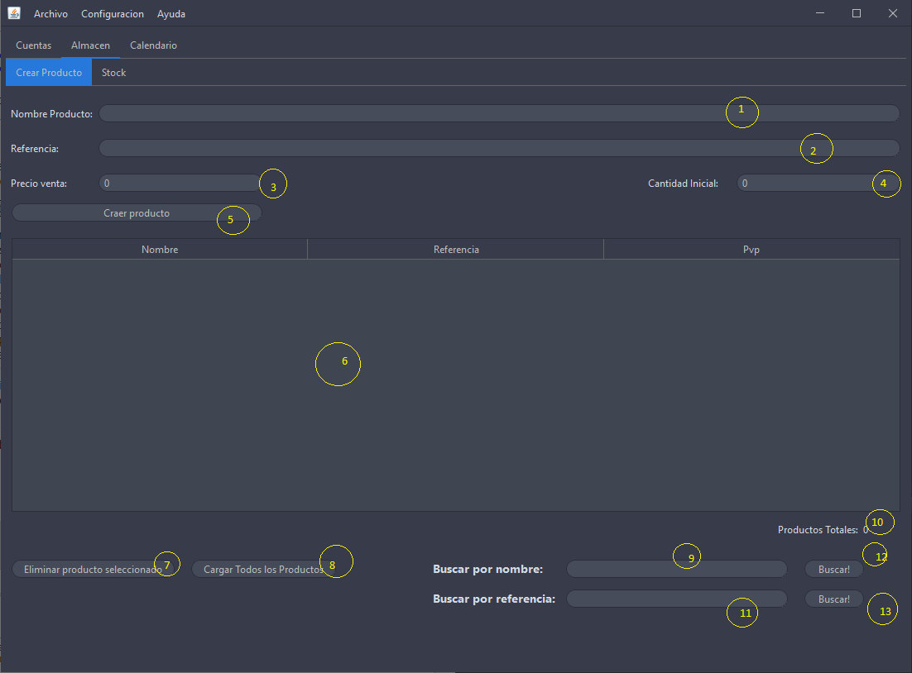
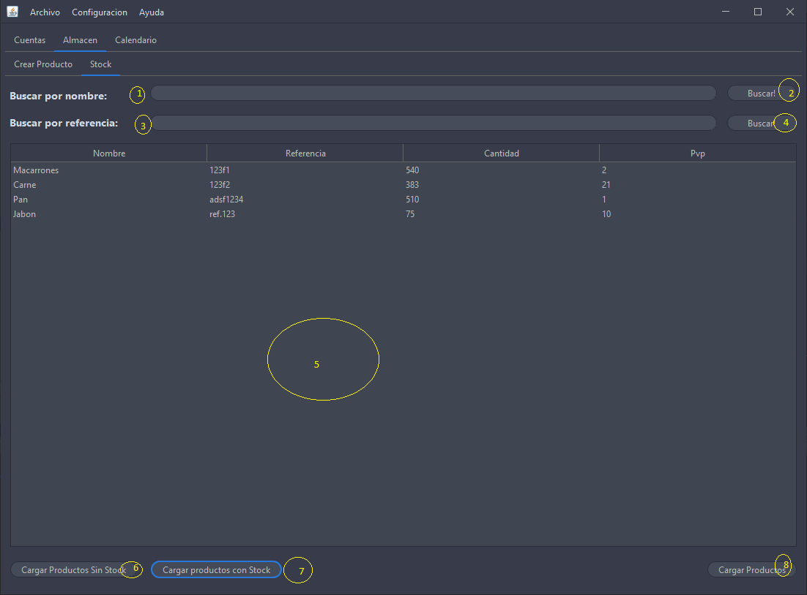

Apartado que nos muestra las herramientas para trabajar con nuestro productos, desde crearlos hasta ver el stock de cada uno de ellos, este apartado es muy necesario ya que para utilizar el apartado de albaran necesitamos crear previamente los productos
Crear Producto
Desde esta ventana podemos crear los productos con los con los que luego trabajaremos en la aplicacion, nos ofrece una serie de facilidades que veremos mas adelante

Campo donde especificaremos el nombre del producto"descripcion" para saber saber de que producto se trata
campo donde especificaremos la referencia del producto, esta debe ser unica ya que es asi nos referiremos al producto
campo donde pondremos le precio al que vamos a vender este producto
compo donde pondremos la unidades que tenemos inicialmente, el valor puede ser 0
Boton para crear el producto con los paramentos insertados anteriormente
tabla donde podemos ver todos los productos, esta se puede ordenar por nombre, referencia o precio de venta
boton que nos permite eliminar el producto seleccionado
boton que carga todos los producto de la bse de datos "en caso de que no lo haga automatico"
Campo donde podremos especificar el nombre del produto y asi buscarlo
Etiqueta qu nos muestra el numero de productos en la base de datos
boton que filta los producto por el nombre que hemos especificado en su campo
campo que nos permite buscar por referencia
boton que nos buscar el producto por la referencia especificada anteriormente
"Algo a destacar, es que las busquedas se puede hacer por nombre o por referencia, no las dos a la vez"
A continuacion un video explicativo de como se crearia un producto
Stock
Desde esta venta podemos ver los productos que tenemos creados con mas detalles que anteriormente, desde aqui podemos hacer busquedas, filtrar los producto o ver el stock actual de cada uno, vamos a nombrar cada unas de las partes de esta ventana

Campo para especificar el nombre del producto a buscar
boton que busca por el nombre del campo 1
campo para especificar la referencia del producto a buscar
boton que permite buscar por la referencia del campo 3
tabla que muestra los productos
boton que muestra en la tabla solo los producto sin stock
boton que muestra en la tabla todos los productos con stock
bton que cargar todos los productos de la base de datos
Ahora vamos a ver un video explicativo de como se trabajaria con esta ventana